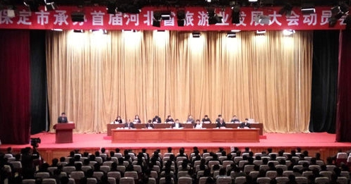

近日，保定市以“中国旅游日”为契机，启动了首届省市旅发大会举办地媒体探访活动与保定美食文化节，推介美景、美食等特色资源，进一步强化“京畿胜境醉美保定”、“美食 美景 美在保定”的旅游形象。

2016年,保定市成功举办首届河北省旅游产业发展大会， “京西百渡休闲度假区”横空出世。今年9月，首届保定市旅游产业发展大会将在高碑店、定兴、白沟新城三地举办，集系列特色小镇与专项旅游体验于一体的“京南小镇特色旅游体验区”即将精彩亮相。为了持续扩大“京西百渡”的旅游品牌影响力，宣传推广“京南小镇”区域新品牌，保定市旅游发展委员会特别邀请了近60家国家级与京津冀主流媒体、全国知名旅游摄影名博博主、旅游行业媒体、旅游达人等，策划组织了首届省市旅发大会举办地媒体探访活动，通过解读大会规划、调研重点项目，宣传保定旅游新业态、新发展。探访活动为期3天，自5月19日至21日分组观摩高碑店、定兴、白沟新城、涞水、易县、涞源等6个县（市、区）的20多个新业态项目，包括世界门窗小镇、京南体育小镇、世界特产小镇、中华非遗小镇、休闲食品小镇、和道创意小镇、百里峡艺术小镇、太行水镇等。
活动现场，市旅发委还对2017年度保定美食文化节的有关情况进行了发布，保定各类餐饮品牌企业代表宣誓倡议“诚实守信经营、微笑优质服务”，助力首届市旅发大会召开。